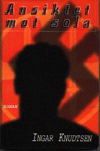

Ansiktet mot sola
Bladkompaniet 1997
Innbundet, 333 s.
ISBN 82-509-3780-5
Baksidetekst og innbrettside
Da gården går på tvangsauksjon, faller hele tilværelsen sammen for familien Svarthammer. Unge Eirik, som har en ødelagt fot på grunn av poliomyelitt, blir tatt hånd om av en av bygdas mest velstående og respekterte menn, og føler etter hvert at Hans Olav Skaret er mer en far enn arbeidsgiver. Skaret er medlem av Nasjonal Samling, og her finner også Eirik den politikken han mener Norge trenger i ei vanskelig tid. Men i Tyskland rustes det til krig, og selv om Eirik ikke kan bli soldat, er han fast bestemt på å kjempe for det han tror på…
Forfatteren beskriver en turbulent tid i norsk historie. Europa står på randen av krig, og i krig er det ikke plass for gråsoner - i krig er alt svart og hvitt. Det er viktig å velge riktig side, men riktig side i dag, kan være feil i morgen.
Seierherre eller taper, i dag hvit i morgen svart… eller?
Forfatterens kommentar
At det går an!
Men en skal praktisere det en hevder som sant. Og jeg har alltid sagt at vi er mennesker først, og så kommer alt det andre etterpå. Arbeid, kjønn, rase og til og med politisk ståsted. Sjøl om dette siste nok kanskje er aller vanskeligst. Er de riktig “mennesker” de som meiner noe annet enn oss sjøl?
Alvorlig talt. Finnes det noe bevisst, politisk oppegående menneske som med hånda på hjertet vil påstå at i en gitt situasjon kunne en ikke ha gjort helt andre politiske valg?
Derfor. Eirik Svarthammer i Ansiktet mot sola kunne vært meg, eller deg. Rett eller galt? I de fleste tilfeller er jeg rykende uenig med min hovedperson i denne boka, andre ganger, som når han argumenterer (med støtte fra en av sine helter, Gulbrand Lunde) mot de småborgerlige i sitt eget parti, og i sær når han reiser til Finland for å se Sovjetunionens overfall på vårt granneland i øst på nært hold, da står vi foruroligende nær hverandre…
Jeg lærte mye både om Nasjonal Samlings historie og om nasjonalistiske og rasistiske og autoritære standpunkter under forberedelsene til skrivinga av denne boka. Meininger og holdninger som ville vært mye mindre skremmende om de hadde vært knyttet til ett lite parti og til ei bestemt tid, og kunne stemples “høyre” eller “venstre”. Det verken kan de, er de, eller var de.
Midt oppe i dette er Eirik Svarthammer en likandes kar. Han strever med stadige forelskelser og onaniens påståtte forbannelser. Han grubler over sitt handikap og hva er styrke og hva er svakhet. Kjenner en brennende trang til å skrive og bevise for alle og mest seg sjøl at også han kan “bli noe”. Gjennom hans øyne virker sjølsagt også standpunktene helt riktige, og Vidkun Quisling er virkelig en Fører. En som kan elskes og beundres, i det minste på avstand. Som et idol, et bilde på veggen, ord i bøker og artikler.
Frihet er også friheten til å velge ufrihet. For en anarkist som meg er kanskje det mest foruroligende av alt.
Boka kan naturligvis leses helt uavhengig av Natt uten navn, men det er likevel tråder som binder bøkene sammen. I det “universet” som jeg skapte rundt førkrigstida på Nordmøre, I Norge, i Verden med den forrige boka hadde Rosa Villena Måholm en så sentral plass at både hun og krigen hennes må være vagt til stede også i denne boka. Tittelen er forøvrig hentet fra falangistsangen “Cara al sol…”